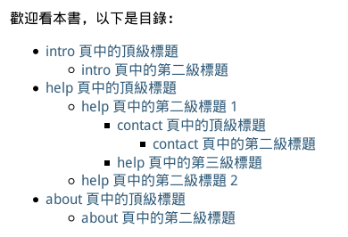

也紀念我們永遠的朋友 李士傑先生（Shih-Chieh Ilya Li）。
Sphinx - 用 reStructuredText 寫網站與書
軟體名稱：Sphinx
介紹版本：1.1.3
官網：https://sphinx-doc.org/
授權：BSD license
簡介
您想要寫點東西嗎？
您是否曾經期望，自己精心寫出的東西可被放在網路上公開？是否想過，要將寫出的作品放在 pdf 或 epub 閱讀器內帶著閱讀？有沒有考慮過「僅僅只寫一次，就能自動衍生出多種格式」這回事？是否希望能將很多不同的次主題寫在不同的檔案中，直到最後匯出時才自動組織，被一起發佈？
對於這些問題，Sphinx 可以幫上您的忙。
Sphinx 是款特別的出版軟體，以強大而又容易上手的輕型置標語言 reStructuredText 為核心，可以組織起大量獨立檔案，從而構成您整份文件。
您撰寫的文件可透過不同的格式匯出出版，如匯出成一個完整的網站、一本 PDF 或 epub 電子書、單頁 HTML 文件、linux man file 等等，格式相當豐富。其中有些格式還能自行定義匯出時要採用的模版與外觀為何。
不過 Sphinx 是一款命令行軟體，上手曲線略顯陡峭。而在想親手定製匯出外觀方面，那也需對目標的格式有一定程度的瞭解才行。不過請放心，本文的目標難度是「猴子也能學會」等級，太過複雜的東西不會細談，但會說到讓您能排版寫書，也能匯出為 pdf 與 html 網站。
本文假設大家的平台是 fedora 18 + sphinx 1.1.3 版，過程中如果沒有特別提及，就表示環境為此。其他平台也可用力參考。
安裝說明
關於 sphinx，fedora 18 的套件庫中就有，那就裝吧：
sudo yum install python-sphinx
此處裝的是 python2 版本，您也可以裝 python3 版本。如下：
sudo yum install python3-sphinx
請擇一使用，兩種版本都各有一些問題需要調整，之後會儘可能提到。此外，也請儘量不要同時安裝以免意外混淆。
其他 Linux、Windows、Mac OS X 的安裝說明還請看此頁。
Windows 的安裝要透過 python 原碼包和 easy_install 包管理系統進行，而 Mac 系統上則是得透過 MacPorts 來安裝。
初次使用
想透過 sphinx 寫作，您必須先建立一個專案。
此處所說的「專案」，可以是一本書或是一本書的不同版本，也可以是一個網站如「我的網誌」之類的。
建立方式就是透過 sphinx-quickstart 程式。這是一個終端機程式，所以請打開您的終端機輸入以下指令：
sphinx-quickstart
如果使用 fedora 下的 python3 版本則是：
sphinx-quickstart-3.3
底下會出現一堆的選項，差不多所有的選項都能事後手動修改，所以不用太緊張。
有些基本注意事項，包括……
- 專案根目錄 (root path) 如果沒有填（使用預設值），就會將當前的目錄視為根目錄，所以通常要填個名字進去。名稱不重要隨意即可。
- 專案名稱 (project name)：對於書來說，這個專案名稱就是書名；對網站來說就是網站名。如果您在此處輸入中文請注意以下一些問題……
- 專案名在某些匯出格式中（已知包括 pdf、epub、man、texinfo 格式），會被視為產生輸出檔案檔名的參考，而麻煩的是 sphinx 預設使用的檔名會排除非英文字元，所以中文專案名可能會將某些輸出格式（如 pdf）的輸出檔案檔名設為空白，導致明明一切正常但檔案就是輸不出來。
- 不過您可以去 conf.py 檔案中手動設定輸出檔名。問題不大，只是要記得去設定一下。
- 專案會有一個版本號，還會有一個釋出號。不知道設什麼就都填 1.0 吧。
- "Do you want to use the epub builder?" 這項建議選 y (預設為 N)，方便日後產生 epub。
- 其他可以用預設值的就用預設值，一路 enter 按下去。這樣就完成了。
設定檔案：conf.py
包括用 sphinx-quickstart 設定的東西在內，絕大多數的設定項目都必須在 conf.py 檔案中才能調節。
可設定的項目大約介紹如下：
- 專案資料夾的結構：包括「模板路徑」或「副檔名」之類的瑣碎東西，通常沒必要去改。
- 基本通用參數：像是作者名、版本號、版權聲明、使用語系等等。
- 外掛功能 (extension)：可以啟動一些 sphinx 預設沒有啟動的額外功能。
- 各種匯出格式的細部設定：這是設定中數量最多的部份。好比說：html 網站可以設定額外的 favicon；而 epub 可以設定額外的封面圖片與 metadata；pdf 可以設定紙張大小……諸如此類。匯出用的外觀模板也是各有不同，都可在此調整。
本檔案非常非常重要，您之後是鐵定會想將它打開來改的，當然現在暫時不理倒無所謂。因此草草帶過，晚點要用時再擇重點來講。
關於 conf.py 檔案的詳細說明可見此處。
撰寫文章
好了，切換到專案目錄下方，您會看到一個名為 index.rst 的檔案，這個檔案就是您這份專案文件的「進入點」，或說「首頁」。
請先用文字編輯器將這個檔案打開，然後您就可以用 reStructuredText 格式來寫您的文件了。
reStructuredText（簡稱 rst 或 reST）是一種輕型置標語言，換句話說，他寫起來和 Markdown 十分相似，不過格式比 Markdown 稍微複雜了些，而功能當然也更強。
提示此處提醒您：除了首頁以外，您還可以在專案的目錄或子目錄下加入更多 .rst 檔案並撰寫他們。這些分散的檔案都可以被集成到您的文件中，一起發佈出去。
要如何將多個不同的 .rst 檔案，依照正確的順序與結構聚合起來，請看之後的 toctree 章節。
reStructuredText 的標準語法
reStructuredText 的官方標準規格是由 docutils 專案在維護；而本回的主題 sphinx 專案又在其上擴展出了一些額外命令。此處我們先不管 sphinx 自訂的東西，先看看標準 reStructuredText 格式。
- docutils 官方快速開始手冊 - 這份文件介紹 reStructuredText 的基本概念與基本格式寫法
- docutils 官方語法範例表 - 這份文件是速查表，包含用表格呈現的大量範例。很好用。
- docutils 官方指令 (directives) 介紹 - 此處的「指令」是一種有著特定格式的語法，可以幫您貼圖或自動產生目錄之類的。
以上教學文件都是官方的正港貨，不過也都是英文的，未必好讀。如果您覺得中文比較順眼，網路上有佛心來著的好心人提供教學：
- VST（Vim reStructured Text）簡介 - 介紹一款支援 reST 格式的 Vim 外掛元件，雖然是在介紹 Vim 外掛元件，不過大多數內容都是 reST 語言通用的。行文也很容易閱讀。
- reStructuredText 簡易入門 - 基本功能都有提到，而且很清晰，還有提示一些容易誤解的小細節。
- reStructuredText 簡明教程 - 簡體中文的說明，寫得非常相當詳細。
關於想要快速試玩的人，可以用這個線上編輯器來快速體會一下 reStructuredText。不過這個編輯器實作出來的版本比較舊，像是 code 指令與 math 指令等較新的指令都沒有做出來……但稍微玩一下還是沒問題啦。
注意語法中的空白分隔
在標準 reStructuredText 格式中，您需要注意一下空白分隔的問題。
這是什麼意思？
舉例來說，像是 對文字施加 *強調* 的語法 這種語法，其語法邊緣都必須要用空白分隔。
- 「這樣 *能展現為* 強調的效果」 －－「這樣 能展現為 強調的效果」
- 「這樣*不能展現為*強調的效果」 －－「這樣*不能展現為*強調的效果」
如果您想要展現為「這樣能展現為強調的效果」的話，則需要用反斜線 \ 將空白取消掉。如「這樣\ *能展現為*\ 強調的效果」。
這種設計，對於那些習慣用空白分隔文字的英語系國家來說是理所當然的，但是對於 CJK 語系國家就相當地冏rz。幸好已經有好野人針對本問題向官方提出 patch 並被官方接受，這種麻煩事很可能會在未來的版本 (docutils > 0.10) 被消除，先等著吧。
擴展格式
在 reStructuredText 中除了基本語法外，sphinx 還額外提供了一些語法格式。這些語法格式被列在這一頁。
此處列出的語法格式一大堆，不過只有一項是各位非知道不可的，那就是 toctree 指令。
toctree
toctree 指令有兩個層面的作用，第一個就是告訴 sphinx 您的檔案是如何被排列組織的；其次就是在當前的頁面位置中嵌入目錄。
舉例來說……
一本實驗書
==========
歡迎看本書，以下是目錄：
.. toctree::
intro
help
about
正文
~~~~
八啦叭啦～♬
以上簡單的 toctree 範例只包含五行，意思是說，當前這一頁會將 intro.rst、help.rst、about.rst 三個檔案視為次級項目，並依照順序放在當前頁面之下。
另一方面，toctree 也會在「以下是目錄：」這串文字下方，自動產生一份目錄列表。
頁面上的目錄列表截圖如下……

▲ 圖1：toctree 產生的目錄
請看，目錄內容會依照我們指定的順序，正確地顯示出來。而且「在目錄中顯示的名字」並非像是 intro 那樣簡單的檔案名稱，而是「該檔案內部最高層級的段落標題」；甚至被引用的檔案內部，所有標題也會被往下依序列出。
還有一件事不知各位注意到了沒有：在「help 頁中的第二級標題 1」這個標題下方，赫然出現了「contact 頁中的頂級標題」項目。
我們上述沒有指定什麼見鬼的「contact 頁」，那這條額外訊息是怎麼跑進來的？
說來其實很簡單，那是因為在「help.rst」檔案內部的二級標題下，被加入了另一個 toctree，而這個 toctree 中就含括了 contact 項目，所以才會變成這樣。
很明顯地，toctree 可以橫跨眾多檔案，層層遞進，將您整份文件全部串接起來。這就是 sphinx 中文件的組織方式了。
toctree 中還有些別的花樣可供設定，以下是個一口氣展現出 toctree 所有特徵的範例：
.. toctree::
:maxdepth: 2
:numbered:
:titlesonly:
:glob:
:hidden:
intro
content/chapter1
content/chapter2
question/*
幫助 ＜help＞
about
其中用兩個冒號引住的部份是參數旗標，粗略解釋如下：
- maxdepth：定義最深深度。
- numbered：標題前方會出現數字編號。
- 注意：取消 :numbered: 旗標時，得手動刪掉 _build/doctrees 資料夾再重建，才會完全套用新值。這是 1.1.3 版的 bug。
- titlesonly：只有單獨的檔案才會列在目錄中，而「檔案內的子標題」不會被列入。
- glob：可以在下方的檔案列表中使用萬用字元（如本例中的 question/* 那行），方便一次性載入大量檔案。這些自動載入的檔案，載入順序會依照字母順序。
- hidden：不直接把目錄顯示在正文中，但結構依然會記錄在程式內部。目錄依然會被用在側邊欄等其他需要目錄的地方。
檔名模式也有些可看的：
- 不需要寫副檔名。
- 以第 2、3 行為例，如果用資料夾作分類，則需要將資料夾名字也列入。副檔名同樣不用寫。
- 第四行示範了萬用字元的用法，記得要搭配 :glob: 旗標使用。
- 第五行會對應到 help.rst 檔案，不過在目錄中的顯示名稱則由 toctree 強制指定為「幫助」。
大約就是這樣囉。
匯出 HTML 網站
依照上述格式，將文件稍微寫一寫，就可以試著匯出了！
首先就先從 HTML 網站開始吧！
匯出操作很簡單，只要在專案資料夾下開終端機，輸入：
make html
一行就搞定了。
您的匯出成果，預設會被放在專案資料夾下的 _build/html 資料夾下面，請去找找。
注意！ 如果您使用了 python3 版本，此時可能無法直接匯出。因為 sphinx-build 指令不存在。
您可以透過修改 Makefile，將該檔案中的 sphinx-build 替換成 sphinx-build-3.3 來解決這個問題。
注意！ 如果您使用了 python2 版本，此時也可能無法直接匯出。這多半是遇到 UnicodeError 的緣故。對此，請確保您的專案路徑中沒有出現非英文字元。
關於 python2 中的 Unicode 問題，本文後面也有一個更粗魯但直接的解決方案，您可以參考。
各種美化與調整
雖然能匯出 html 了，不過美觀度讓人不甚滿意，於是進入美化階段……總之請打開 conf.py 檔案。
提示 並不是所有可用的設定參數，都會老實以註解的型式被預先寫在 conf.py 檔案中。
要取得完整的可設定項目清單，還請參看官網的說明頁面。
介面語言
第一個該修改的應該是通用變數 language，建議將其改設為 zh_TW，之後大部份固定的介面用文字，如「search」，就會自動被轉譯成中文字。
HTML 佈景主題 (Theme) 與網站標題
其他與 HTML 相關的變數，主要集中在 Options for HTML output 這行下面。其中，html_theme 是最重要的。
簡單說來，就是將 html_theme 指定為某個 theme 的名字（可用名字見這一頁），之後，還可選擇用 html_theme_options 對您的佈景進行微調，不同的 theme 可接受的變數也有所不同。
sphinx 還支援使用者從頭自訂一個 theme，但此處不講，請自行參看官網。
另外，html_title 表示網站名稱。預設的值只適用於寫程式說明書，所以通常也要重新設定，建議自行試看看。
增添或修改 CSS
如果您要修改 CSS，請在專案資料夾下方加入以下兩個檔案（資料夾不存在請自行建立）：
- _templates/page.html
- _static/style.css
然後將 page.html 檔案內容設定為：
{% extends "!page.html" %}
{% set css_files = css_files + ["_static/style.css"] %}
透過這兩個步驟，您就可以在 style.css 檔案中隨意增添您網頁的 CSS 內容了。
註釋 這部份資料源自 Tinkerer 專案的這一頁。Tinkerer 是一個用 sphinx 來架靜態 blog 的專案，各位有興趣也可試試。
提示 如果想進一步瞭解 page.html 檔案是在搞什麼鬼，或是想繼續深入 sphinx 的 theme 自訂功能，這一頁值得您參考看看。
變更搜尋系統分詞算法
sphinx 的 html 輸出會同時包含一個搜尋介面，讓讀者能在整個網站中找資料，不過問題是 sphinx 預設的分詞算法並不適用於中文……嗯，這是個讓人頭疼的老問題了，中文分詞算法一直以來都非常地不好做。
總之沒有中文分詞算法，建議用日文分詞算法暫時替代，效果會略好一點（英文分詞算法主要是用半形空白作為分隔，而日文好歹把全形逗點與句號之類的都算進去了）。
要這麼做，請額外在 conf.py 中加入一行設定如下：
html_search_language = 'ja'
這樣在建立索引時就會套用日文模式了。
注意！ 如果您想要拯救蒼生，請去看 site-packages/sphinx/search 資料夾，裡面端正放著英文索引與日文索引的程式碼。請參考服用。我草草翻了一下，日文分詞用程式碼應該可以透過插換詞庫讓其支援中文，有心人可以試著從此處入手。
匯出 PDF
sphinx 生成 PDF 不難，但生成中文 PDF 就非常麻煩，如果要讓這生成的動作快捷、方便、不麻煩……那就更麻煩了！
嗯，典型的不折騰會死行為，有病得治這我也知道……不管怎麼說，總之來折騰一下。
事前準備
先說預備知識：
sphinx 預設是用 LaTeX 來渲染 pdf 的，而 LaTeX 方案很遺憾地引擎不支援 unicode，所以無法渲染中文字元，一碰上中文就報錯，這當然不能用。因此必須改用能支援 unicode 的 XeLaTeX 方案。
提示 其實 sphinx 也支援用 rst2pdf 製作 pdf，就某種意義上來說可能比此處用 XeLaTeX 手續更簡單一點。不過因為 tex 相關資源眾多而我打算西瓜靠大邊，故此處就跳過。
有了預備知識，就勇敢開始吧！
在 Fedora 18 下需要以下的包，直接抓來裝：
sudo yum install texlive-collection-xetex texlive-collection-latexextra
依賴包份量超多，有上千個之多，需要空間約為 350 MB。慢慢裝唄……
設定中文相關參數與字型
本章資料參考微風夕語網站的一篇文章。
在 conf.py 檔案中，找到 latex_elements 字典中的 preamble 變數，將其代換為……
'preamble': r'''
\usepackage{fontspec} % 引入 fontsepc，這樣才可以用下面的設定字型的指令
\setmainfont{AR PL UMing TW} % 預設字型
\setsansfont{AR PL UMing TW} % sans family 字型
\setromanfont{AR PL UMing TW} % roman 字型
\setmonofont{AR PL UMing TW} % 等寬字型
\XeTeXlinebreaklocale "zh" % 設定斷行演算法為中文
\XeTeXlinebreakskip = 0pt plus 1pt % 設定中文字距與英文字距
''',
注意字串前面要加個 "r"，免得將字串中的 \u 解釋成 unicode 碼點。至於上述字型，當然可以調成系統中有的任意字型。不知道系統字型名稱的，可以用 fc-list 指令來抓取（限 Linux 使用）。
註釋 我估計用 xeCJK 來設定字體可能會更好，不過基於某些不知名原因，我一直無法成功渲染出 PDF，會報錯失敗。
tex 技術非我所長，歡迎各位有心人嚐試與留言。
另外，參考網站中有提到預設的 inputenc 是衝突套件，不過我測試時沒有發生任何問題，故此處不多費工夫去處理它。
生成 PDF
準備了那麼多，那就來具體產生看看吧。
提示 對於生成 PDF 來說，sphinx 內部只負責產生 .tex 與相關檔案。
當 .tex 產生好之後就沒 sphinx 的事了。sphinx 只會去呼叫外部程式 pdflatex，來將 .tex 檔處理成 pdf 檔。
以上是預設工序無誤，但是還請注意，外部程式 pdflatex 不能處理中文。我們得想方設法用 xelatex 將其取代才行。
手工生成 PDF
先說明手工作法：
- 請在專案資料夾下執行 make latex。這會在 _build/latex 資料夾下生成相應的「檔名.tex」檔案
- 切換到 _build/latex 資料夾，接著執行「xelatex 檔名.tex」。注意 xelatex 要連續執行兩次，否則目錄無法正確產生！
生成的過程中可能有些問題，以下就來將其排除。
無法產生 .tex 檔案？
如果您在當初建立專案時用了純中文，則您的 .tex 檔案檔名可能會被設為空檔名。導致明明沒有任何錯誤訊息，關鍵的 .tex 檔案就是產生不出來……
要解決這個問題，請打開 conf.py 並尋找 latex_documents 變數。以下是個例子：
latex_documents = [
('index', 'filename.tex', u'作品名',
u'作者名', 'manual'),
]
請檢查第二個變數（上例中的 filename.tex），確定它是一個正常的檔名。如此一來就沒問題了。
language 與 babel 問題
如果您有將 conf.py 中 language 的值設為 zh_CN 或 zh_TW，則在 pdf 生成過程中會出現錯誤。關於這個問題，您可以參考此處的說明。總而言之是 reStructuredText 的 babel 模組還不支援中文所造成的。
我個人追蹤了一下程式碼，發現這問題似乎源自於 docutils 上游，看起來也無法被三兩下快速解決掉。
不過繞過的方法還是有的：請在 conf.py 檔案的 latex_elements 中加入額外一行：
latex_elements = {
...
"babel" = "", # 加入這行
...
}
如此一來就能避免 xelatex 啟用 babel 翻譯功能，暫時避開問題。
關於 babel = "" 的設定詳情與理由，可參看這個網頁。
python2 下的 Unicode 問題
如果您使用 python2 版本的 sphinx，則可能會在生成各種輸出格式的過程中，碰到 Unicode Error，這通常是因為輸出路徑中含有中文字所造成的（但我也遇過其他亂七八糟的原因），總之，此時請到您的 conf.py 檔案中，在 import sys, os 下方加入四行，變成如下這般……
import sys, os
# Avoid unicode problem for python2
if sys.version_info.major == 2:
reload(sys)
sys.setdefaultencoding('utf8')
此問題就能被加以躲開。
單步生成 PDF
解決所有問題，能夠順利產生檔案後，來看看能不能把之前手工產生 PDF 的步驟弄得簡單一點。
想將手工步驟合併進行，可以修改某個 sphinx 系統檔案：
/usr/lib/python2.7/site-packages/sphinx/texinputs/Makefile
我找到的預設位置如上所示，您的位置可能略有差異。
將這個檔案打開修改，並將內部的 pdflatex 關鍵字全部改成 xelatex。
回到您的專案目錄下，執行以下一句：
make latexpdf
如此一來，就能一個指令產生 pdf 檔案了。
註釋 當然，此處修改系統檔來達成自動化未必是個好方案。取而代之，您也可以試著新增一個 shell script 或修改專案資料夾內的 Makefile 檔案來解決問題。比方說將 Makefile 檔案中的 latexpdf 段落改成像下面這樣（留意縮進是 tab 不是空白）：
latexpdf:
$(SPHINXBUILD) -b latex $(ALLSPHINXOPTS) $(BUILDDIR)/latex
@echo "Running LaTeX files through xelatex..."
#$(MAKE) -C $(BUILDDIR)/latex all-pdf
cd $(BUILDDIR)/latex ; xelatex *.tex ; xelatex *.tex
@echo "xelatex finished; the PDF files are in $(BUILDDIR)/latex."
PDF 的美化與校調
PDF 的自訂比 HTML 的自訂麻煩多了。
您可以先看看 conf.py 檔案中的 latex_documents：
latex_documents = [
('index', 'filename.tex', u'作品名',
u'作者名', 'manual'),
]
上例中 manual 位置，可以被設為 manual 與 howto 的其中之一。這兩種就是 sphinx 僅有的兩種 pdf 佈局。其中，manual 比較重量級，而 howto 則要輕得多，試試看就知。
除此之外，您還可以在 conf.py 檔案中的 latex_elements 變數中進行字體、字型、紙張規格等設定。
關於可用變數的詳情還請參看這一頁。但不管怎麼說，預設曝露在外可被簡單套用的設定數量實在很有限。如果您打算更進一步地設計您的頁面，請注意以下資料夾：
/usr/lib/python2.7/site-packages/sphinx/texinputs
本資料夾有兩個檔案，分別為 sphinxmanual.cls 與 sphinxhowto.cls，此兩檔案正好應對著前述的 manual 佈局與 howto 佈局。您可以修改他們，或者索性依樣畫瓢設計出您自己的佈局。
關於 Epub 的補充
您可以透過 make epub 快速建立 epub。不過如果您的標題名稱使用了全中文，則 epub 檔案的檔名就會被留空，因此做不出來。
您可以在 conf.py 中加入以下一行來解決問題。
epub_basename = u'不含副檔名的檔名'
sphinx 官方公開表示 epub 匯出格式目前尚處於實驗階段，因此畫面效果相當欠佳。還有另外提醒一點：epub 固然有許多獨立專屬的設定，不過另一方面，它也有許多資料會直接抓 html 的設定來用。當設定結果不盡如人意時，也該嚐試同時調整 html 的設定才是。
公開您的文件
如果您想在網路上公開您的文件，這邊推薦 Read the Docs 網站，該站支援任何 sphinx 專案作為資料來源。
運用方法是：將您的 sphinx 專案上傳到 bitbucket 或 github 等版本控制網站，然後去 Read the Docs 上做一些連結與授權，對方就會開始自動抓取您的文件，並隨時依據您內容變化而自動更新內容。
因為這中間涉及版本控制系統如何使用等問題，故本文不細講。Read The Docs 的線上使用說明在此，請各位自行參考。
講了這許多，本篇文章就到此先告一段落，祝各位寫文快樂！
至於我嘛，也終於可以把鍵盤掰爛扔垃圾筒，快樂地看電視去了。
專欄總覽


E-Mail：contact@openfoundry.org Address：台北市南港區研究院路2段128號 中央研究院資訊科學研究所 . 隱私權條款. 使用條款

評論
多謝補充參考資料！